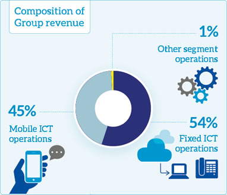
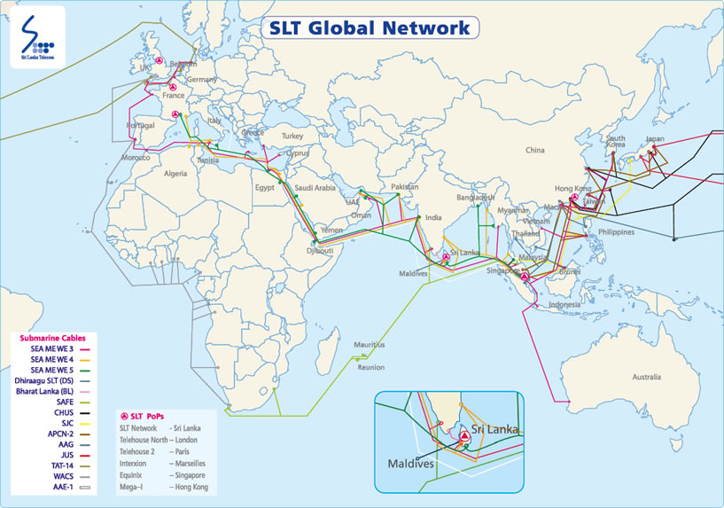
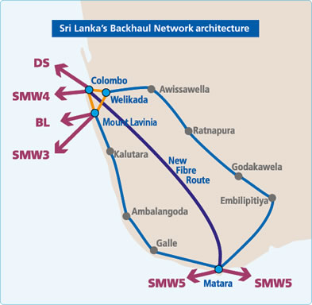
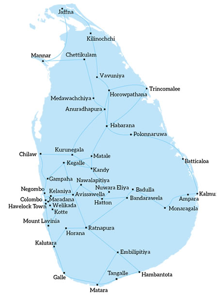

Sri Lanka Telecom PLC (“SLT” or the “Company”) is Sri Lanka’s national Information and Communications Technology (ICT) provider. We are also the leading broadband and backbone infrastructure services provider in the country. Throughout our decades of operations, we have been delivering cutting edge and sophisticated solutions to our customers. We will continue to do so as we move onto the arena as a fully-consolidated digital lifestyle services provider.

Principal lines of business
The Sri Lanka Telecom Group provides a comprehensive suite of ICT products in fixed and mobile ICT domains, broadband, data services, Internet Protocol Television (IPTV), cloud computing, hosting services, and networking solutions. The aforementioned are categorised under fixed ICT operations, mobile operations, and other segment operations. In 2017, fixed and mobile ICT operations made up the bulk of our business as in the preceding years. This accounted for 99% of revenue. It also represented 99% of our total assets and 100% of the capital expenditure of the Group.
Products and markets
Fixed ICT operations
The Group’s holding Company, SLT, operates in the fixed ICT business. SLT provides telecommunications networks and ICT services to Internet Service Providers (ISP) and households, companies at any level across all sectors of the economy, government institutions, associated telecommunications operators, and ISPs. These services encompass voice, data, broadband, wholesale, enterprise, cloud, international, and TV. We aspire to enhance broadband-backed consumer and enterprise services by increasing and sustaining the broadband footprint of the country. This is to be achieved through the Next Generation Network (NGN) and the National Backbone Network (NBN), supplemented by the latest technologies of ADSL2+, VDSL2, optical fibre, carrier-grade Wi-Fi, and 4G-LTE technologies. We also use our international undersea cable networks of the five international submarine cable systems; SEA-ME-WE 3, SEA-ME-WE 4, SEA-ME-WE 5, Bharat-Lanka and Dhiraagu-SLT submarine cable systems to open up our businesses to international clients, and hence secure our position as a forefront company in both Asia and the world.
Mobile ICT operations
Sri Lanka Telecom Mobitel (Private) Limited (“Mobitel”) is a 100% owned subsidiary of SLT. It offers mobile services, high-speed broadband, enterprise solutions, IDD services, and a range of supplementary value added services. SLT Mobitel has always broken boundaries in the region: the launch of the first Super-3.5G HSPA network in South Asia in December 2007, successful trial of HSPA+, MIMO (Multiple Input Multiple Output) in 2009, another first in the region. SLT Mobitel also went on to demonstrate 4G-LTE technology, another first for South Asia in 2011. Accordingly, SLT Mobitel launched its 4G-LTE Network in 2013 to provide unparalleled broadband experience to Sri Lankans. Keeping ahead with pioneering new technologies, SLT Mobitel trialled 4.5G LTE-Advanced Pro Technology again for the first time in South Asia in June 2016. In 2017, SLT Mobitel was able to deploy the first Sub-1G Mobile Broadband Network in Sri Lanka by using the 900MHz spectrum innovatively to provide superior coverage across the country. On 1 February 2018 SLT Mobitel launched the First Commercial 4.5G/4G+ Mobile Network in South Asia. With this introduction and being the only 4.5G/4G+ Mobile Network in Sri Lanka, SLT Mobitel possess the fastest broadband speeds in the country. The award received from Ookla Speedtest for being the Fastest Mobile Network in Sri Lanka attests to SLT Mobitel’s unparalleled broadband network experience. SLT Mobitel’s coverage extends nationwide and includes international roaming with the partnership of a global web of over 600 networks. Mobitel has also proved its IT and Software capabilities by architecting and implementing strategic ICT solutions for the Enterprise and Government sectors. International award winning Electronic Visa (Electronic Travel Authorisation) Solution for the Department of Immigration and Emigration and the National Railway Ticket Reservation solution which is used by Sri Lanka Railway and all the telecommunication operators in the country are two examples of Mobitel’s proven ICT capabilities.
Scale of operations
SLT Group revenue, financial year 2017
The aggregate revenue of the SLT Group increased by 2.6% to Rs. 75.7 billion during the year. This was backed by a growth in revenue of 3.3% at SLT, and a matching growth of 1.5% at Mobitel. In terms of business lines, the fastest growth rates with regards to revenue were accounted by broadband, enterprise solutions, TV, and for enterprises, households and individuals of both fixed and mobile ICT segments.

Market capitalisation
SLT is one of Sri Lanka’s foremost blue-chip companies, with a market capitalisation of Rs. 51.44 billion as of 31 December 2017.
Our reach and offering
The SLT Group has island-wide coverage and distributes its services to over seven million recipients across fixed and mobile ICT services in our road map to Vision 2022, SLT invested over Rs. 75 billion in the last three years to develop our ICT infrastructure. Our island-wide network of optical fibre, with broadband speeds of up to 100 Mbps, extends to nearly 30,000 km fibre optic length. Under the i-Sri Lanka project, Sri Lanka is now one of the most ICT-connected countries in South Asia. We served around two million households through fibre optic connectivity by the end of 2017 using multiple fixed and mobile broadband technologies.
Network connectivity
We possess nearly 30,000 km of optical fibre dispersed throughout the island, constituting 2.5 million loops. We equally possess over 300 nodes connected throughout the country which accumulates all traffic from various points in the island. Thus, based on requirements we can route information to the required place in a few milliseconds. The core transmission network is equally built with an ultra high-speed capacity and cutting-edge routers.
Our mobile network connects over 6.8 million subscribers across Sri Lanka with voice and broadband wireless services. Mobile subscribers can connect using GSM/EDGE (2G/2.5G), UMTS/HSPA/HSPA+/DC-HSPA+(3G/3.5G/3.75G), LTE/LTE-Advanced (4G/4.5G) technologies via our mobile arm.
Capabilities
Our fixed broadband options provides speeds of up to 100 Mbps with monthly data capacities exceeding 3000GB. Customers in the SME segment and individual users requiring greater bandwidth at high speed are provided with a segmented facility which extends speed beyond 20 Mbps. Mobile broadband is capable of providing download burst speeds of 300 Mbps with 4.5G LTE-Advanced, 105 Mbps with 4G LTE and 40 Mbps with 3G.
Towards 5G
We have successfully trialled 4.5G LTE-Advanced pro technology in Sri Lanka. This is capable of delivering speeds exceeding 1 Gbps. We were the first organisation to trial this technology in South Asia. Subsequent to the trial we commercially deployed the first 4.5G LTE-Advanced Mobile Network in South Asia on 1 February 2018. We look forward to deploy 5G Network in the near future.
NB-IoT
SLT Mobitel showcased the Nascent Narrowband Internet of Things (NB-IoT) technology for the first time in South Asia at the 2017 Techno Exhibition in Sri Lanka. SLT Mobitel showcased NB-IoT as a powerful technology in urban farming and home safety systems. SLT Mobitel’s innovative deployment of NB-IoT interleaved on its 900MHz spectrum ensured an increased mobile coverage, enabling its use for sensors deep within concrete structures or underground such as required for smart meters or disaster monitoring sensors.
Global connectivity
With our unmatched global connectivity options, our ISP network is the premier in the country and meets the standards of the global ICT industry. With five International submarine cable systems: SEA-ME-WE 3, SEA-ME-WE 4, SEA-ME-WE 5, Bharat-Lanka and Dhiraagu-SLT submarine cable systems, we are well poised to compete with international players in the industry. This will help secure Sri Lanka as a regional digital hub, and add the country to the world’s PoP network. We can also refine the country as the choicest IT-BPO/data centre destination.

International backhauling network
SLT provided a global connectivity backhauling facility to international operators by establishing a full landing status of the SEA-ME-WE 5 cable station in Matara. The network consists of three cable stations at Colombo, Mount Lavinia, and Matara joined to the international backhaul hubs of Colombo and Welikada. The benefits of this venture are manifold, as operators are able to use the system to terminate traffic in Sri Lanka, cross-connect with other systems, and even enhance their carrying capacity.
South Asia’s first submarine cable depot in Galle
Galle Submarine Cable Depot (Private) Limited (GSCDPL), managed by SLT, is South Asia’s first submarine cable depot. This is a joint venture with IOCPL (Indian Ocean Cableship Private Limited) which is a ship service provider for SEAIOCMA (South East Asia and Indian Ocean Cable Maintenance Agreement). Newly formed GSCDPL will be a depot service provider under the SEAIOCMA from 1 January 2018.

The National Backbone Network
Our backbone network is made up of 100G technology, 300 career Ethernet nodes, and 64 SLBN nodes. It is available and functioning at all times due to a comprehensive 1+2 redundancy system. Our network is of high quality speed and capacity backed with a low latency; and is a veritable asset in the country’s development. The NBN aims to cater to the future needs of all ICT operators in the country.

Multiple inter-connected data centres
Recognised as the “national data centre”, the newly established data centre at Pitipana is the country's first purpose-built, Tier III data centre. Currently in operation, the data centre will enhance the provision of a secure and reliable data hosting facility and cloud computing services in Sri Lanka. Multiple data centres have been interconnected, including the data centres at SLT headquarters and at Welikada, via the national fibre optics backbone network. With this new development, SLT is able to offer a broader portfolio of robust co-location and data hosting facilities at competitive prices.